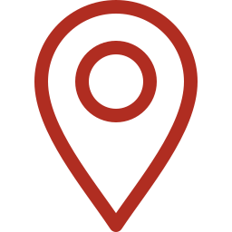

LAINE & TISSAGE
32 artisanes

Khénifra • Béni Mellal-KhénifraCoopérative Tithrit
Gardiennes des motifs géométriques du Moyen-Atlas. Tapis Zayane et Hanbel confectionnés entièrement à partir de toisons locales lavées à l’eau
Voir la fiche atelier ...